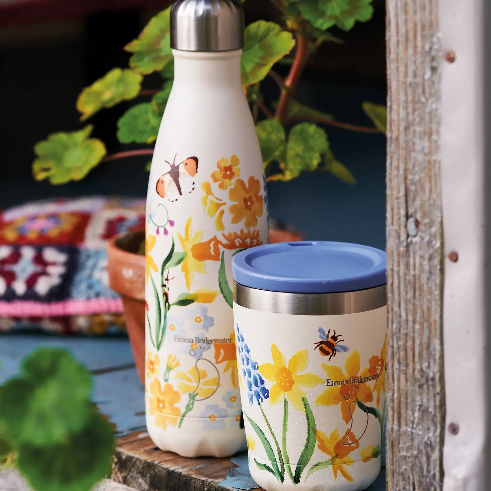
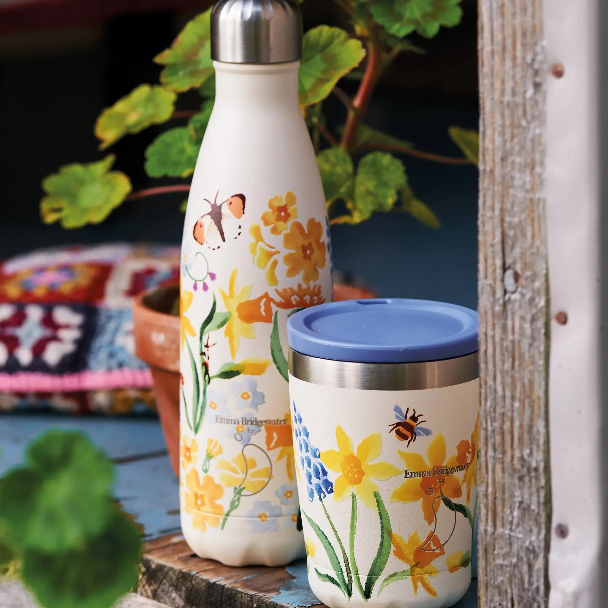

Chilly's
Cos’è Chilly’s?
Mossa dalla consapevolezza dell'impatto ambientale delle bottiglie di plastica monouso, l'azienda si è impegnata a offrire un'alternativa affidabile e attraente.
La visione di Chilly’s non è semplicemente quella di vendere bottiglie, ma di trasformare abitudini quotidiane per un impatto positivo sul pianeta.

 

Perchè è un Brand ecosostenibile?
L’obiettivo dell'azienda è quella di un mondo in cui l'uso responsabile delle risorse è la norma, in cui ogni individuo si sente responsabile della protezione del pianeta e delle generazioni future.
Chilly’s si impegna attivamente a sostenere cause ambientali e sociali che riflettono i suoi valori. Attraverso programmi di donazione e iniziative di sensibilizzazione, l'azienda cerca di ispirare e coinvolgere la comunità nella protezione dell'ambiente e nella promozione del consumo responsabile.
"L'azienda si impegna a perseguire un percorso di miglioramento continuo, alla ricerca costante di soluzioni più sostenibili e innovative."
Materiali utilizzati e fornitori
Nel 2024, Chilly’s ha lanciato una nuova linea di prodotti quasi interamente realizzati con materiali riciclati, sottolineando il loro impegno verso una produzione più eco-friendly.
Per la distribuzione dei suoi prodotti, ha scelto Asendia, un'azienda impegnata nella neutralità carbonica, eliminando tutte le emissioni di carbonio contribuendo così a ridurre l'impatto ambientale del trasporto.
Visita il loro sito
Nel sito troverai tutte le informazioni sui loro prodotti, il loro pensiero e come operano per essere un brand ecosostenibile.
Chilly's